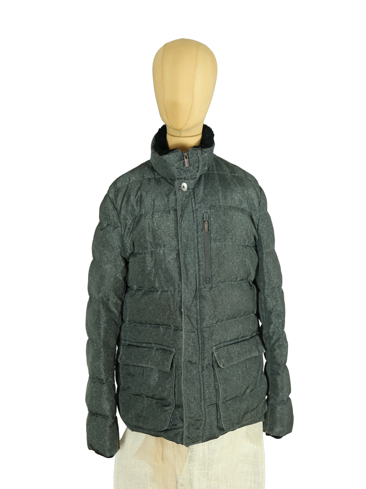

1 / 14Aus dem kuratierten Archiv von Disorder119. Diese Daunenjacke von Armani Collezioni verbindet klassische Eleganz mit funktionaler Wintertauglichkeit. Das melierte graue Außenmaterial wirkt ruhig und strukturiert, mit einer textilen Oberfläche, die sich bewusst von typischen Hochglanz-Daunenjacken absetzt. Die klare, horizontale Steppung sorgt für eine ausgewogene Silhouette, während der hohe Stehkragen mit innenliegendem, dunklem Futter zusätzlichen Schutz bietet. Funktionale Details wie die vertikale Brusttasche mit Reißverschluss und die aufgesetzten Fronttaschen unterstreichen den sachlichen, urbanen Charakter. Die Jacke wirkt kompakt, wertig und zeitlos tragbar – sowohl im Alltag als auch in formelleren Kontexten. Details: Marke: Armani Collezioni Farbe: Grau Größe: 52 Passform: Gerade Verschluss: Reißverschluss und Druckknopf Material: Textil mit Daunenfüllung Herstellungsland: Nicht angegeben Fotografie & Passform: Das Kleidungsstück wurde auf unserer Standard-Schneiderpuppe fotografiert, die wir zur konsistenten Darstellung aller Kleidungsstücke verwenden. Maße der Schneiderpuppe: Brustumfang 89 cm Taillenumfang 66 cm Hüftumfang 89 cm Schulterbreite 38 cm Diese Maße dienen ausschließlich der visuellen Einordnung und werden nicht als Artikelmaße bezeichnet. Zustand: Sehr guter gebrauchter Zustand mit altersgemäßen, leichten Tragespuren. Rechtliche Hinweise: Verkauf als gebrauchtes Kleidungsstück. Die Beschreibung erfolgt nach bestem Wissen und Gewissen. Farbnuancen und Oberflächenwirkungen können aufgrund von Lichtverhältnissen bei der Fotografie sowie unterschiedlicher Bildschirmdarstellungen leicht vom Original abweichen. Disorder119 steht für sorgfältig kuratierte Designerstücke mit Fokus auf Authentizität, Qualität und zeitlose Relevanz.
Disorder119 · Kuratiertes Archiv für Designer-, Vintage- und Contemporary-Mode. Jedes Stück wird einzeln ausgewählt, fotografiert und beschrieben.